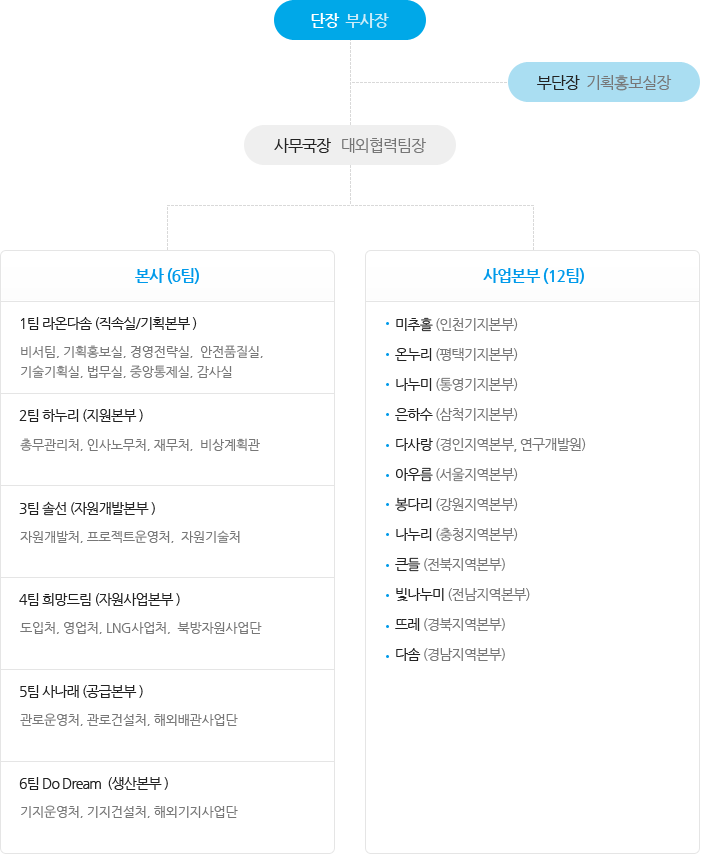

KOGAS 온누리봉사단
봉사단 조직KOGAS 봉사단 행동강령
- 겸손한 마음으로 실천한다
- 긍정적인 마음으로 활동한다
- 자발적으로 활동한다
- 섬김의 자세로 함께한다
- 진심한 마음으로 함께한다
- 즐거운 마음으로 함께한다
- 책임감 있게 실천한다
조직현황
- 99년 4월청연봉사대 출범
- 09년 2월본사 5개 팀 + 사업본부 12개 지부로 변경
- 10년 3월본사 6개 팀 + 사업본부 12개 지부로 변경

KOGAS 온누리봉사단 조직도
- 단장 : 부사장
- 부단장 : 기획홍보실장
- 사무국장 : 대외협력팀장
- 본사(6팀)
- 1팀 라온다솜(직속실/기획본부 : 비서팀, 기획홍보실, 경영전략실, 안전품질실, 기술기획실, 법무실, 중앙통제실, 감사실)
- 2팀 하누리(지원본부 : 총무관리처, 인사노무처, 재무처, 비상계획관)
- 3팀 솔선(자원개발본부 : 자원개발처, 프로젝트운영처, 자원기술처)
- 4팀 희망드림(자원사업본부 : 도입처, 영업처, LNG사업처, 북방자원사업단)
- 5팀 사나래(공급본부 : 관로운영처, 관로건설처, 해외배관사업단)
- 6팀 Do Dream(두드림) - (생산본부 : 기지운영처, 기지건설처, 해외기지사업단)
- 사업본부(12팀)
- 미추홀 (인천기지본부)
- 온누리 (평택기지본부)
- 나누미 (통영기지본부)
- 은하수 (삼척기지본부)
- 다사랑 (경인지역본부, 연구개발원)
- 아우름 (서울지역본부)
- 봉다리 (강원지역본부)
- 나누리 (충청지역본부)
- 큰들 (전북지역본부)
- 빛나누미 (전남지역본부)
- 뜨레 (경북지역본부)
- 다솜 (경남지역본부)
- 본사(6팀)
- 사무국장 : 대외협력팀장
- 부단장 : 기획홍보실장